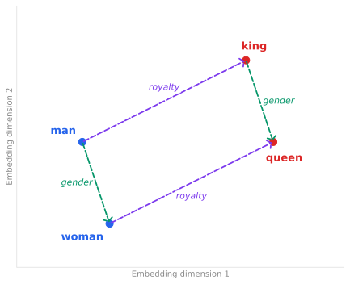
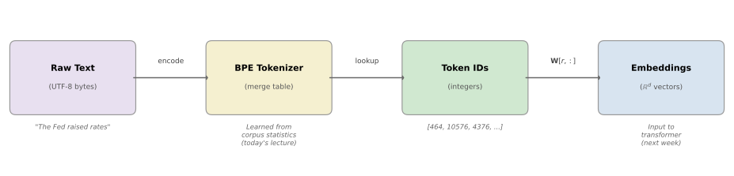

From Words to Tokens#
Bag of Words, Word2Vec, Byte Pair Encoding, and Tiktoken
PDF Version
Roadmap
These notes prepare the foundation for next week’s deep dive into the nanochat repository, which builds a GPT-style language model from scratch. A critical component of nanochat is its tokenizer, which uses Byte Pair Encoding (BPE). Next week’s notes will assume fluency with BPE.
Today’s plan:
Bag of Words (BoW) – the classical document-level representation, its strengths, and why it falls short for capturing word-level meaning.
Word2Vec – how the idea of representing words as dense vectors in a learned latent space got started, and how we bridge back to document-level representations.
Byte Pair Encoding (BPE) – the subword tokenization algorithm used by GPT-2/3/4, in mathematical detail with worked examples.
Tiktoken – OpenAI’s production BPE implementation and why it matters.
Bag of Words: Representing Documents#
Before we discuss how to represent individual words as vectors, it is worth understanding the older and simpler problem of representing entire documents as vectors. The classical approach is the Bag of Words (BoW) model.
The BoW Representation#
Fix a vocabulary \(\mathcal{V} = \{w_1, w_2, \ldots, w_V\}\). Given a document \(d\), its bag-of-words representation is the vector \(\mathbf{x}_d \in \mathbb{R}^V\) whose \(i\)-th component is the number of times word \(w_i\) appears in \(d\):
The name “bag of words” reflects the fact that this representation discards all word order – the document is treated as an unordered bag (multiset) of its constituent words.
BoW Example
Consider a vocabulary \(\mathcal{V} = \{\text{the, Fed, raised, rates, lowered, today, this, bond, prices}\}\) and two documents:
Their BoW vectors are:
These two documents differ in only one dimension (“raised” vs. “lowered”), so they are close in BoW space – which correctly reflects that they discuss similar topics, even though the policy action is opposite.
Now consider two longer documents that describe opposite economic outcomes:
Their BoW vectors are:
These vectors are identical – BoW cannot distinguish them at all. Both documents contain the same set of words with the same counts; the only difference is which words modify which nouns, and that information lives entirely in word order, which BoW discards. To a BoW model, a rate hike that lowers bond prices looks the same as a rate cut that raises bond prices. This is a devastating limitation for financial applications where the direction of causality is exactly what matters.
TF-IDF: Weighting the Bag#
Raw counts overweight common words like “the” and “is.” The standard fix is TF-IDF (Term Frequency–Inverse Document Frequency). For word \(w_i\) in document \(d\), given a corpus \(\mathcal{D}\) of \(N\) documents:
where \(\text{df}(w_i)\) is the number of documents in \(\mathcal{D}\) that contain \(w_i\), and \(\text{tf}(w_i, d)\) is the normalized term frequency:
i.e., the raw count of \(w_i\) in \(d\) divided by the total number of words \(|d|\) in the document. Normalizing by document length prevents long documents from having systematically larger TF-IDF values than short ones. (Some implementations use the raw count instead; the normalization is a common but not universal convention.)
Why the logarithm in IDF? The ratio \(N / \text{df}(w_i)\) can vary over an enormous range. A word appearing in every document has \(\text{df} = N\), giving a ratio of 1, while a word appearing in only one document has a ratio of \(N\) – which could be millions. The logarithm compresses this range to a manageable scale. Without it, extremely rare words would completely dominate the TF-IDF score. Concretely:
A word in every document: \(\log(N/N) = \log 1 = 0\). Its IDF is zero – it carries no discriminative information.
A word in half the documents: \(\log(N/(N/2)) = \log 2 \approx 0.69\).
A word in 1 out of 10,000 documents: \(\log(10{,}000/1) \approx 9.2\).
The log turns a multiplicative range (\(1\) to \(N\)) into an additive one (\(0\) to \(\log N\)), keeping the IDF weights balanced.
Overall, the IDF term downweights words that appear in many documents (“the,” “of”) and upweights words that are distinctive to particular documents (“quantitative easing,” “yield curve”).
Limitations of BoW#
While BoW and TF-IDF are useful for document-level tasks like information retrieval and topic classification, they have fundamental limitations:
No word-level semantics. BoW tells us about documents, not about individual words. The vocabulary items are just indices – there is no notion of similarity between “rate” and “yield.”
Sparsity. With \(V = 50{,}000\) vocabulary terms, every document vector is extremely sparse. Most entries are zero.
No word order. “The Fed raised rates” and “Rates raised the Fed” have identical BoW vectors.
High dimensionality. The vectors live in \(\mathbb{R}^V\), which is wasteful when \(V\) is large.
Topic Models: Finding Latent Structure in BoW#
One influential response to the limitations above was to look for latent topics hiding behind the raw word counts. The most widely used approach is Latent Dirichlet Allocation (LDA), introduced by Blei, Ng, and Jordan (2003).
The intuition. LDA assumes that every document in a corpus is a mixture of a small number of topics, and every topic is a distribution over words. For example, an earnings call transcript might be 40% “monetary policy” topic, 35% “credit risk” topic, and 25% “quarterly results” topic. The “monetary policy” topic, in turn, assigns high probability to words like “rate,” “inflation,” and “tightening,” while the “credit risk” topic favors “default,” “spread,” and “downgrade.”
How it works (sketch). Fix the number of topics at \(K\) (a hyperparameter, typically \(K \in [10, 100]\)). LDA posits the following generative story for each document \(d\):
Draw a topic mixture \(\boldsymbol{\theta}_d \sim \text{Dirichlet}(\boldsymbol{\alpha})\), where \(\boldsymbol{\alpha} \in \mathbb{R}^K\) is a hyperparameter controlling how concentrated the mixture is (small \(\alpha_k\) values encourage documents to focus on fewer topics), \(\boldsymbol{\theta}_d \in \mathbb{R}^K\), and \(\sum_k \theta_{d,k} = 1\). The Dirichlet distribution is a distribution over probability vectors – it outputs a \(K\)-dimensional vector that sums to one, making it a natural prior for topic mixtures.
For each word position \(i\) in the document:
Draw a topic assignment \(z_i \sim \text{Categorical}(\boldsymbol{\theta}_d)\). The Categorical distribution is simply a generalization of a weighted coin flip to \(K\) outcomes: it picks one topic according to the probabilities in \(\boldsymbol{\theta}_d\).
Draw a word \(w_i \sim \text{Categorical}(\boldsymbol{\phi}_{z_i})\), where \(\boldsymbol{\phi}_k \in \mathbb{R}^V\) is the word distribution for topic \(k\).
Given the observed words, the posterior distributions over topics are estimated via variational inference or Gibbs sampling. After fitting, each document gets a \(K\)-dimensional topic vector \(\boldsymbol{\theta}_d\), which is a much more compact and interpretable representation than the original \(V\)-dimensional BoW vector.
Strengths and limitations. LDA addresses BoW’s sparsity and high-dimensionality problems: documents are represented in \(\mathbb{R}^K\) rather than \(\mathbb{R}^V\), and topics provide interpretable structure. However, LDA still operates at the document level – it tells us that “rate” and “inflation” tend to co-occur in the same topic, but it does not give us a dense vector for each individual word the way Word2Vec does. It also inherits the bag-of-words assumption: word order is ignored.
From Documents to Words
BoW and LDA both answer the question: How do we represent a document as a vector? Word2Vec (next section) asks a different question: How do we represent a single word as a dense, low-dimensional vector that captures its meaning?
As we will see, once we have word-level vectors, we can also build document representations by combining them – giving us the best of both worlds.
Word2Vec: Words as Vectors#
Motivation: Why Not One-Hot Vectors?#
Suppose our vocabulary has \(V\) words. The most naive representation assigns each word \(w_i\) a one-hot vector \(\mathbf{e}_i \in \mathbb{R}^{V}\), where:
For a vocabulary of size \(V = 50{,}000\), every word is a sparse vector of length 50,000. This has two severe problems:
Curse of dimensionality. The vectors live in \(\mathbb{R}^{50000}\) but only occupy \(V\) points, all mutually orthogonal.
No notion of similarity. For any two distinct words \(w_i \neq w_j\):
“King” is exactly as far from “queen” as it is from “banana.”
Note that a one-hot vector for a word is conceptually the same as a single column of a BoW matrix – each word is just an index, with no learned structure.
Core Idea
Word2Vec (Mikolov et al., 2013) learns a mapping \(f: \mathcal{V} \to \mathbb{R}^d\) where \(d \ll V\) (typically \(d \in [50, 300]\)), such that words appearing in similar contexts receive similar vectors. This is called a distributed representation or word embedding.
The Skip-Gram Model#
Word2Vec comes in two flavors: CBOW (Continuous Bag of Words) and Skip-Gram. We focus on Skip-Gram because it is more widely used and more instructive.
Optional Explainer: CBOW (Continuous Bag of Words)
We focus on Skip-Gram in these notes, but it is worth understanding the alternative. Whereas Skip-Gram predicts context words from a center word, CBOW does the reverse: it predicts the center word from its surrounding context.
Given a context window \(\{w_{t-c}, \ldots, w_{t-1}, w_{t+1}, \ldots, w_{t+c}\}\), CBOW first averages the context word embeddings:
and then predicts the center word via softmax:
The name “Continuous Bag of Words” comes from the fact that the context is reduced to an unordered average (a “bag”), but unlike BoW the inputs are continuous (dense) vectors rather than discrete counts.
CBOW vs. Skip-Gram in practice:
CBOW is faster to train (one prediction per window vs. \(2c\) predictions).
CBOW tends to work slightly better for frequent words, because it averages over many context observations.
Skip-Gram tends to work better for rare words, because each occurrence generates \(2c\) separate training examples that directly update the rare word’s embedding.
Skip-Gram with negative sampling became the default choice in most applications, which is why we focus on it here.
Setup. Given a corpus of words \(w_1, w_2, \ldots, w_T\) and a context window of size \(c\), the Skip-Gram model asks:
Given the center word \(w_t\), predict the context words \(w_{t-c}, \ldots, w_{t-1}, w_{t+1}, \ldots, w_{t+c}\).
We maintain two embedding matrices:
\(\mathbf{W} \in \mathbb{R}^{V \times d}\) – the input (center) embeddings. Row \(i\) is \(\mathbf{v}_{w_i}\).
\(\mathbf{W}' \in \mathbb{R}^{V \times d}\) – the output (context) embeddings. Row \(j\) is \(\mathbf{v}'_{w_j}\).
Objective. The probability of observing context word \(w_O\) given center word \(w_I\) is modeled via a softmax:
The training objective maximizes the log-likelihood over the corpus:
Computational Cost
The denominator in the softmax sums over the entire vocabulary \(V\). For \(V = 50{,}000\), computing this sum for every training example is prohibitively expensive. In practice, Word2Vec uses one of two approximations:
Negative sampling – reformulate as binary classification and sample \(k\) “negative” words instead of summing over all \(V\).
Hierarchical softmax – organize the vocabulary as a binary tree to compute the softmax in \(O(\log V)\) time.
We cover negative sampling in detail below, with hierarchical softmax as an optional aside.
Negative Sampling (NEG)#
Why is it called “negative” sampling? The full softmax asks: “out of all \(V\) words in the vocabulary, which one is the correct context word?” This is a \(V\)-way classification problem. Negative sampling reformulates this as a much simpler binary classification task:
Given a pair of words \((w_I, w_O)\), is \(w_O\) a real context word of \(w_I\) (a “positive” example), or is it a randomly drawn noise word (a “negative” example)?
The training data for this binary classifier consists of two types of examples:
Positive examples (label = 1): real (center word, context word) pairs observed in the corpus. For instance, if the sentence is “the Fed raised rates,” then (raised, Fed) and (raised, rates) are positive pairs.
Negative examples (label = 0): pairs where the context word is replaced by a randomly sampled word that was not actually observed in that context. For instance, (raised, armadillo) is almost certainly a negative pair.
The name “negative sampling” comes from the step of sampling these negative examples – fabricating fake context pairs that the model should learn to reject.
The noise distribution. For each positive pair \((w_I, w_O)\), we draw \(k\) negative words \(w_1^{-}, \ldots, w_k^{-}\) from a noise distribution \(P_n(w)\). Mikolov et al. found empirically that the best choice is the unigram distribution raised to the \(\tfrac{3}{4}\) power:
where \(\operatorname{freq}(w)\) denotes the raw count of word \(w\) in the training corpus. The denominator is simply a normalizing constant that ensures the probabilities sum to 1: we raise every word’s frequency to the power \(\tfrac{3}{4}\), then divide by the total so that \(\sum_{w} P_n(w) = 1\).
Optional Explainer: Why the 3/4 Exponent?
The exponent \(\alpha = \tfrac{3}{4}\) is a smoothing trick that reshapes the raw frequency distribution. To build intuition, consider the extreme alternatives:
\(\alpha = 1\) (raw unigram distribution): Very common words like “the” and “of” dominate the negative samples. The model wastes most of its effort learning to distinguish real context words from these stop words, which is too easy to be informative.
\(\alpha = 0\) (uniform distribution): Every word is equally likely as a negative sample, regardless of frequency. Extremely rare words get sampled as negatives just as often as common words, which is noisy and inefficient.
\(\alpha = \tfrac{3}{4}\) (the sweet spot): The distribution is “flattened” relative to the raw frequencies. Rare words get sampled more often than their raw frequency would suggest, and common words get sampled less often. This provides a more useful and balanced training signal.
Concrete illustration. Suppose “the” appears \(1{,}000{,}000\) times and “armadillo” appears \(16\) times in the corpus. The raw frequency ratio is:
After applying the \(\tfrac{3}{4}\) exponent:
The ratio drops from \(62{,}500\) to about \(7{,}000\). In other words, “armadillo” is now roughly \(9\times\) more likely to appear as a negative sample than it would be under the raw distribution. This gives the model more opportunities to learn a useful embedding for rare words, which is where the training signal is most needed.
The value \(\tfrac{3}{4}\) was found by experimentation, not derived from theory. It simply worked best across a range of benchmarks.
The negative sampling objective. The objective for a single (center, context) pair \((w_I, w_O)\) with \(k\) negative samples is:
where \(\sigma(x) = 1/(1 + e^{-x})\) is the sigmoid function and \(k\) is the number of negative samples (typically \(k \in [5, 20]\)).
Let us unpack the two terms:
First term: \(\log \sigma(\mathbf{v}'_{w_O}{}^\top \mathbf{v}_{w_I})\). The sigmoid \(\sigma(\cdot)\) outputs a value near 1 when the dot product \(\mathbf{v}'_{w_O}{}^\top \mathbf{v}_{w_I}\) is large and positive. Taking the log, this term is maximized when the dot product is large – i.e., when the embeddings of the real center–context pair are similar.
Second term: \(\sum_{i=1}^{k} \log \sigma(-\mathbf{v}'_{w_i^{-}}{}^\top \mathbf{v}_{w_I})\). Note the minus sign inside \(\sigma\). This is maximized when \(\mathbf{v}'_{w_i^{-}}{}^\top \mathbf{v}_{w_I}\) is large and negative – i.e., when the embeddings of the noise pairs are dissimilar.
Together, the objective trains the embeddings so that words appearing in similar contexts end up with similar vectors, and randomly paired words end up far apart – without ever computing the expensive \(V\)-way softmax.
Optional Explainer: Hierarchical Softmax
The other approximation to the full softmax is to organize the entire vocabulary as a binary tree (typically a Huffman tree, so that frequent words have shorter paths from the root). Each leaf of the tree corresponds to a word, and each internal node \(n\) has its own learned vector \(\mathbf{v}_n \in \mathbb{R}^d\).
To compute \(P(w_O \mid w_I)\), instead of normalizing over all \(V\) words, we take the product of binary (left/right) decisions along the path from the root to the leaf for \(w_O\). At each internal node \(n\) on the path, the model makes a left/right decision using a sigmoid:
The total probability is the product over all nodes along the path from root to leaf:
where \(\operatorname{sign}(n) = +1\) if the path goes left at node \(n\) and \(-1\) if it goes right. Because the tree has depth \(O(\log V)\), computing this product costs \(O(d \cdot \log V)\) instead of \(O(d \cdot V)\) – a massive speedup. A Huffman tree gives even shorter paths for frequent words.
Why isn’t this the default? In practice, negative sampling is simpler to implement, easier to parallelize on GPUs, and tends to produce slightly better embeddings for downstream tasks. But hierarchical softmax is theoretically elegant and was important historically.
Why This Matters: The Geometry of Meaning#
After training, the input embedding matrix \(\mathbf{W}\) encodes remarkable semantic structure. The most celebrated example:
More precisely, the query “which word is to woman as king is to man?” is answered by:
where cosine similarity is defined as:
{kind=link}

Fig. 1 The embedding space learns parallel offset vectors for semantic relationships. The vector from “man” to “king” (“royalty”) is approximately parallel to the vector from “woman” to “queen”.#
Key Takeaway
Word2Vec demonstrated that meaning can be captured by geometry: words that are semantically similar end up close together in a continuous vector space. Every modern language model – including the transformer architecture we study in nanochat – inherits this core insight. The embedding layer at the bottom of a transformer is a word-to-vector lookup, trained end-to-end with the rest of the network.
From Word Vectors Back to Document Vectors#
In the Bag of Words section, we represented documents as sparse BoW vectors in \(\mathbb{R}^V\). Now that we have dense word vectors \(\mathbf{v}_w \in \mathbb{R}^d\), a natural question arises: can we use them to build better document representations?
Simple averaging. The most straightforward approach is to represent a document \(d = (w_1, w_2, \ldots, w_n)\) as the mean of its word embeddings:
This is surprisingly effective for many tasks. The resulting vector \(\mathbf{d}_{\text{avg}} \in \mathbb{R}^d\) is dense and low-dimensional, and inherits the semantic structure of the word embeddings.
TF-IDF–weighted averaging. A better variant uses TF-IDF weights to emphasize content-bearing words:
This downweights common words (“the,” “is”) and upweights distinctive words (“collateral,” “quantitative easing”), producing a more informative document vector.
Optional Explainer: Doc2Vec (Paragraph Vectors)
Le and Mikolov (2014) proposed a more principled approach: introduce a learnable document embedding \(\mathbf{v}_d \in \mathbb{R}^d\) for each document \(d\) in the training corpus, and train it alongside the word embeddings.
In the Distributed Memory (DM) variant, the document vector is concatenated with (or averaged alongside) the context word vectors and used to predict the next word:
where \(g(\cdot)\) is a concatenation or averaging function. The document vector acts as a “memory” of the document’s overall topic, providing context that does not fit in the local word window.
At test time, a new document’s vector is inferred by gradient descent with the word embeddings held fixed.
There is also a simpler Distributed Bag of Words (DBOW) variant, where the document vector alone (without word context) is used to predict randomly sampled words from the document – analogous to how Skip-Gram uses a center word to predict context words.
Doc2Vec often outperforms simple averaging, but it is more expensive to train and less widely used today. Modern transformers produce contextualized document embeddings directly, which have largely superseded these earlier approaches.
The Full Circle
Notice the conceptual progression:
BoW: Documents \(\to\) sparse vectors in \(\mathbb{R}^V\). No word-level semantics.
Word2Vec: Words \(\to\) dense vectors in \(\mathbb{R}^d\). Rich word-level semantics, but what about documents?
Averaging / Doc2Vec: Word vectors \(\to\) document vectors in \(\mathbb{R}^d\). Dense, semantic, low-dimensional.
Transformers (next week): The model learns contextual embeddings for each token (subword), which can serve as both word-level and document-level representations depending on how they are pooled.
From Words to Subwords: The Vocabulary Problem#
Word2Vec assigns one vector per word. This creates a practical problem:
Fixed vocabulary. Any word not seen during training is mapped to a generic
<UNK>token – no useful representation at all.Morphological blindness. “Running,” “runs,” and “runner” get completely independent vectors, even though they share the morpheme “run.”
Vocabulary explosion. Covering all of English requires hundreds of thousands of word types, most of which are rare.
The solution: instead of tokenizing at the word level, tokenize at the subword level. This is exactly what Byte Pair Encoding does.
Byte Pair Encoding (BPE)#
Overview#
Byte Pair Encoding was originally a data compression algorithm (Gage, 1994) and was adapted for subword tokenization by Sennrich, Haddow, and Birch (2016). It is the tokenization method used by GPT-2, GPT-3, GPT-4, and – most relevant to us – the nanochat codebase we will study next week.
BPE in One Sentence
BPE iteratively merges the most frequent pair of adjacent symbols in the training corpus, building a subword vocabulary from the bottom up.
Formal Setup#
What is the “corpus”? The raw training corpus is simply a large body of text – a long string of characters (or bytes) that includes letters, digits, punctuation, spaces, tabs, newlines, and any other characters present in the data. For example, a financial corpus might be the concatenation of thousands of 10-K filings or newswire articles.
The word-frequency dictionary. Rather than scanning the entire raw text on every iteration, BPE implementations first build a word-frequency dictionary. The raw text is split into “words” by a simple rule (typically whitespace), and we count how many times each unique word appears. For instance, if the word “lower” appears 500 times in the raw text, the dictionary would include an entry \(\text{"lower"} \mapsto 500\) (among many others).
We denote this dictionary as \(\mathcal{C} = \{(w, \operatorname{freq}(w)) : w \text{ is a unique word in the corpus}\}\). The key point is that \(\mathcal{C}\) is a set of (word, count) pairs, not the raw text itself. This is purely an efficiency trick: instead of scanning billions of characters on every iteration, we scan the (much smaller) dictionary and weight each word by its frequency.
What About Whitespace?
In the original BPE formulation (Sennrich et al., 2016), whitespace is used to split the text into words, and then a special end-of-word symbol </w> is appended to each word so that the tokenizer can later reconstruct word boundaries. Whitespace itself is consumed by the split and does not appear as a symbol.
In the byte-level BPE variant used by GPT-2 and nanochat (see the Byte-Level BPE section below), the approach is different: the raw text is first encoded as UTF-8 bytes, and then a regex-based pre-tokenizer splits the byte stream into chunks. In this variant, spaces, tabs, and newlines are included as byte values in the token vocabulary. For instance, the space character is byte 0x20 and is a valid symbol that can participate in merges.
Representing words as symbol sequences.
Each word in \(\mathcal{C}\) is split into a sequence of individual characters (or bytes), with a special end-of-word marker </w> appended:
Let \(\mathcal{S} = \{s_1, s_2, \ldots, s_n\}\) denote the current symbol inventory – initially, this is just the set of all individual characters that appear in any word in \(\mathcal{C}\), plus the </w> marker.
Pair frequency. The core quantity in BPE is the pair frequency: how often two symbols appear next to each other across the entire corpus. For any ordered pair of symbols \((s_i, s_j)\), define:
where \(\operatorname{repr}(w)\) is the current symbol-sequence representation of word \(w\), and \(\operatorname{count}\bigl((s_i, s_j), \operatorname{repr}(w)\bigr)\) counts how many times \(s_i\) appears immediately followed by \(s_j\) in that sequence. Multiplying by \(\operatorname{freq}(w)\) accounts for the fact that a word appearing 1,000 times in the corpus contributes 1,000 times as much as a word appearing once.
Pair Frequency Example
Suppose the dictionary contains:
Word |
Freq |
Current representation |
|---|---|---|
low |
5 |
|
newest |
6 |
|
The pair (w, </w>) appears once in the representation of “low” (not in “newest”), so:
The pair (e, s) appears once in “newest” (not in “low”), so:
The BPE Algorithm#
Algorithm: BPE Training (Learning the Merge Table)
Input: Corpus \(\mathcal{C}\) with word frequencies; desired vocabulary size \(V_{\max}\) Output: Merge table \(\mathcal{M}\); vocabulary \(\mathcal{S}\)
Initialize \(\mathcal{S} \leftarrow\) set of all individual characters (or bytes) plus
</w>Initialize \(\mathcal{M} \leftarrow \emptyset\)
Represent each word in \(\mathcal{C}\) as a sequence of characters from \(\mathcal{S}\)
While \(|\mathcal{S}| < V_{\max}\):
Compute \(f(s_i, s_j)\) for all adjacent pairs \((s_i, s_j)\)
\((s^*, s^{**}) \leftarrow \arg\max_{(s_i, s_j)} f(s_i, s_j)\)
Create new symbol \(s_{\text{new}} \leftarrow s^* \cdot s^{**}\) (concatenation)
\(\mathcal{S} \leftarrow \mathcal{S} \cup \{s_{\text{new}}\}\)
\(\mathcal{M} \leftarrow \mathcal{M} \cup \{(s^*, s^{**}) \to s_{\text{new}}\}\)
Replace every occurrence of \((s^*, s^{**})\) in the corpus with \(s_{\text{new}}\)
Return \(\mathcal{M}, \mathcal{S}\)
Algorithm: BPE Encoding (Applying the Merge Table at Inference)
Input: String \(x\); ordered merge table \(\mathcal{M} = [(m_1, r_1), (m_2, r_2), \ldots]\) Output: Token sequence
Split \(x\) into individual characters (or bytes): \(\text{tokens} \leftarrow [x_1, x_2, \ldots, x_n]\)
For each \((m_i, r_i) \in \mathcal{M}\) in order:
Scan \(\text{tokens}\) and replace every adjacent pair matching \(m_i\) with \(r_i\)
Return tokens
Worked Example#
BPE Worked Example
Consider a toy corpus with word frequencies:
Word |
Frequency |
|---|---|
|
5 |
|
2 |
|
6 |
|
3 |
Initial symbol inventory: \(\mathcal{S}_0 = \{\texttt{l, o, w, e, r, n, i, d, s, t, </w>}\}\) (\(|\mathcal{S}_0| = 11\)).
Initial representations:
Word |
Freq |
Representation |
|---|---|---|
low |
5 |
|
lower |
2 |
|
newest |
6 |
|
widest |
3 |
|
— Iteration 1 —
Count all adjacent pairs:
Pair |
\(f\) |
Pair |
\(f\) |
Pair |
\(f\) |
|---|---|---|---|---|---|
|
7 |
|
9 |
|
8 |
|
7 |
|
9 |
|
2 |
|
5 |
|
9 |
|
6 |
|
3 |
|
3 |
|
3 |
|
2 |
Three pairs tie at \(f = 9\): (e,s), (s,t), and (t,</w>). We break ties arbitrarily; suppose we select (e,s).
\(\Rightarrow\) Merge 1: (e,s) \(\to\) es. \(\mathcal{S}_1 = \mathcal{S}_0 \cup \{\texttt{es}\}\), \(|\mathcal{S}_1| = 12\).
Updated representations:
Word |
Freq |
Representation |
|---|---|---|
low |
5 |
|
lower |
2 |
|
newest |
6 |
|
widest |
3 |
|
— Iteration 2 —
Recount pairs (only affected pairs change):
Pair |
\(f\) |
Pair |
\(f\) |
|---|---|---|---|
|
9 |
|
9 |
|
7 |
|
7 |
|
6 |
|
6 |
|
5 |
|
3 |
Tie between (es,t) and (t,</w>) at \(f = 9\). Suppose we pick (es,t).
\(\Rightarrow\) Merge 2: (es,t) \(\to\) est. \(\mathcal{S}_2 = \mathcal{S}_1 \cup \{\texttt{est}\}\), \(|\mathcal{S}_2| = 13\).
Updated representations:
Word |
Freq |
Representation |
|---|---|---|
low |
5 |
|
lower |
2 |
|
newest |
6 |
|
widest |
3 |
|
— Iteration 3 —
Now (est,</w>) has frequency \(6 + 3 = 9\), the highest.
\(\Rightarrow\) Merge 3: (est,</w>) \(\to\) est</w>. \(|\mathcal{S}_3| = 14\).
Observe that we have now learned the subword unit “est</w>,” which captures the English superlative suffix. The algorithm has discovered morphology purely from frequency statistics.
We could continue: the next merge would likely be (l,o) at \(f = 7\), then (lo,w) at \(f = 7\), building up the common prefix “low.”
Final merge table (first 3 merges):
Encoding a New String#
Applying the Merge Table
Suppose we want to tokenize the new word “lowest</w>” using the merge table \(\mathcal{M}\) from above.
Step 0. Split into characters:
Step 1. Apply merge rule 1: \((\texttt{e},\texttt{s}) \to \texttt{es}\).
Step 2. Apply merge rule 2: \((\texttt{es},\texttt{t}) \to \texttt{est}\).
Step 3. Apply merge rule 3: \((\texttt{est},\texttt{</w>}) \to \texttt{est</w>}\).
No more merge rules apply. The final tokenization is:
Note how the algorithm correctly identifies the stem/suffix boundary without any linguistic rules – it learned “est</w>” as a subword unit from corpus statistics alone.
Properties of BPE#
Key Properties
No out-of-vocabulary words. Since the base vocabulary includes all individual bytes (or characters), any string can be tokenized – in the worst case, as a sequence of single bytes.
Frequent substrings become tokens. Common words like “the” or “of” will be single tokens. Rare words are broken into familiar subword pieces.
Controllable vocabulary size. The hyperparameter \(V_{\max}\) directly controls the trade-off:
Small \(V_{\max}\): more tokens per sentence, but smaller embedding matrix.
Large \(V_{\max}\): fewer tokens per sentence, but larger embedding matrix.
GPT-2 uses \(V_{\max} = 50{,}257\). GPT-4 uses approximately \(100{,}000\).
Deterministic. Given the merge table \(\mathcal{M}\), encoding is a deterministic function. There is no randomness at inference time.
Greedy and order-dependent. The merge rules are applied in the order they were learned. This means BPE encoding is not globally optimal – it is a greedy algorithm.
Byte-Level BPE (GPT-2 Variant)#
The original BPE operates on Unicode characters. GPT-2 introduced an important variant: byte-level BPE. Instead of starting with a character-level vocabulary (\(|\mathcal{S}_0|\) could be many thousands of Unicode code points), we start with the 256 raw byte values:
This guarantees that the base vocabulary has exactly 256 symbols regardless of language. Any UTF-8 encoded text maps to a sequence of bytes, so byte-level BPE can tokenize any text in any language without preprocessing.
Connection to nanochat
The nanochat codebase we will study next week implements byte-level BPE. Its tokenizer:
Encodes the input string as raw UTF-8 bytes.
Applies a regex-based pre-tokenization pattern (splitting on whitespace, punctuation, etc.) to identify mergeable chunks.
Iteratively applies the learned merge table within each chunk.
Understanding today’s material – especially the merge-table construction and application – will let us focus next week on the model architecture rather than the tokenizer internals.
Complexity Analysis#
Let \(N\) be the total number of symbols in the corpus (after character-level splitting), and let \(M = V_{\max} - |\mathcal{S}_0|\) be the number of merge operations.
Training. Each iteration requires scanning all adjacent pairs: \(O(N)\). We perform \(M\) iterations, so the total training cost is:
In practice, efficient implementations use hash maps to track pair counts and update them incrementally after each merge, avoiding a full rescan.
Encoding. For a string of length \(n\) (in characters/bytes), applying \(M\) merge rules naively takes \(O(M \cdot n)\). Optimized implementations can do this in \(O(n \log n)\) or even \(O(n)\) with appropriate data structures.
Tiktoken: Production-Grade BPE#
What Is Tiktoken?#
Tiktoken is OpenAI’s open-source, production-grade BPE tokenizer library. It implements the same byte-level BPE algorithm we described above, but with important engineering optimizations.
Tiktoken vs. Our BPE Description
Aspect |
Textbook BPE (above) |
Tiktoken |
|---|---|---|
Language |
Conceptual / Python |
Core in Rust, Python bindings |
Speed |
Educational |
~3–6x faster than HuggingFace tokenizers |
Pre-tokenization |
Simple whitespace split |
Regex-based splitting (GPT-2/GPT-4 patterns) |
Special tokens |
None |
`< |
Merge table |
Learned from scratch |
Pre-trained, shipped as |
Encodings#
Tiktoken ships with several encodings, each corresponding to a different merge table (trained on different data with different vocabulary sizes):
Encoding |
Used by |
Vocab Size |
|---|---|---|
|
GPT-2 |
50,257 |
|
Codex (code-davinci-002) |
50,281 |
|
GPT-3.5-Turbo, GPT-4 |
100,256 |
|
GPT-4o |
200,019 |
Special Tokens#
Beyond the BPE-learned merge tokens, tiktoken reserves a set of special tokens that are not learned by the BPE algorithm but are added to the vocabulary by hand. These tokens serve as control signals that structure the input for the model. Some key examples:
Token |
Purpose |
|---|---|
|
Marks the boundary between unrelated documents during training. At inference time, signals the end of a generation. |
|
Marks the beginning of a message in the chat format (“im” = “input message,” as part of OpenAI’s Chat Markup Language, or ChatML). |
|
Marks the end of a message in the chat format. |
|
Separator within a structured message (used in some model versions). |
In the chat completions API, a conversation like:
<|im_start|>system<|im_sep|>You are a helpful assistant.<|im_end|>
<|im_start|>user<|im_sep|>What is the yield curve?<|im_end|>
<|im_start|>assistant<|im_sep|>
is what the model actually sees. The special tokens delineate roles (system, user, assistant) and message boundaries. Tool-use calls and function results are similarly wrapped in these structured tokens, allowing the model to distinguish natural language from control flow.
Special tokens are handled separately from BPE: they are matched before the BPE merge rules are applied, so the string <|endoftext|> is always tokenized as a single token and never broken into subwords.
Unicode Coverage and Vocabulary Size#
A natural question: does tiktoken cover all possible text, including Chinese, Arabic, emoji, and obscure Unicode symbols?
The answer is yes, because tiktoken uses byte-level BPE. The base vocabulary always includes all 256 byte values (0x00 through 0xFF), and any Unicode string can be encoded as a sequence of UTF-8 bytes. For example, the Chinese character for “rate” (U+7387) is encoded as the three bytes [0xE7, 0x8E, 0x87] in UTF-8. If BPE learned a merge for this byte sequence, it becomes a single token; if not, it is represented as three separate byte tokens. Either way, it is always representable.
Efficiency Across Languages
While byte-level BPE can represent any language, it does not do so equally efficiently. BPE merge tables are trained predominantly on English text, so English words tend to be compressed into fewer tokens than equivalent text in other languages. Studies have found that the same semantic content in Chinese, Japanese, or Hindi can require \(2\)–\(3\times\) as many tokens as in English. This means non-English users of GPT-style models effectively get a smaller context window and pay more per semantic unit – a practical consideration for multilingual financial applications.
Why Tiktoken Matters for Finance Applications#
For financial applications, tokenization has direct cost and performance implications:
API costs are per-token. Understanding how text maps to tokens lets you estimate costs for processing financial documents (10-K filings, earnings transcripts, etc.).
Context window budgeting. A GPT-4 context window of 128K tokens does not mean 128K words. Typical English text tokenizes at roughly 1 token per 3–4 characters, so 128K tokens \(\approx\) 96K words. Financial jargon and numerical data may tokenize less efficiently.
Reproducibility. When you build a financial NLP pipeline, the tokenizer is part of the contract between your data and the model. Switching tokenizers changes the integer sequences the model sees and breaks compatibility.
Practical Note
You can count tokens before sending an API call:
import tiktoken
enc = tiktoken.encoding_for_model("gpt-4")
tokens = enc.encode("Federal Reserve raises rates by 25bp")
print(len(tokens)) # number of tokens
print(tokens) # list of integer token IDs
This is useful for staying within context limits and estimating costs when processing large financial corpora.
You can also explore tokenization interactively using Tiktokenizer, a web app that lets you type in text and see exactly how it gets split into tokens by different OpenAI tokenizers.
Connecting the Pieces#
Let us summarize the logical flow from this lecture into next week’s material:
{kind=link}

Fig. 2 The tokenization pipeline. BPE converts raw text to integer token IDs, which are then looked up in an embedding matrix (conceptually descended from Word2Vec) to produce the dense vectors that enter the transformer.#
What to Remember
Bag of Words represents documents as sparse count vectors. Simple and effective for information retrieval, but captures no word-level semantics and ignores word order.
Word2Vec showed that words can be meaningfully represented as dense vectors in \(\mathbb{R}^d\), learned from co-occurrence statistics. Document vectors can be recovered by averaging word embeddings.
BPE solves the vocabulary problem by learning subword units from frequency statistics. It guarantees full coverage (no
<UNK>tokens) and discovers morphological structure automatically.Tiktoken is the production implementation of BPE used by OpenAI’s models. Understanding it lets you budget context windows and API costs.
Next week: We will see exactly how
nanochatuses BPE to tokenize training data, maps token IDs to embeddings, and feeds those embeddings through a transformer to predict the next token.
References#
T. Mikolov, K. Chen, G. Corrado, and J. Dean. “Efficient Estimation of Word Representations in Vector Space.” arXiv:1301.3781, 2013.
T. Mikolov, I. Sutskever, K. Chen, G. Corrado, and J. Dean. “Distributed Representations of Words and Phrases and their Compositionality.” NeurIPS, 2013.
Q. Le and T. Mikolov. “Distributed Representations of Sentences and Documents.” ICML, 2014.
D. Blei, A. Ng, and M. Jordan. “Latent Dirichlet Allocation.” Journal of Machine Learning Research, 3:993–1022, 2003.
P. Gage. “A New Algorithm for Data Compression.” The C Users Journal, 12(2):23–38, 1994.
R. Sennrich, B. Haddow, and A. Birch. “Neural Machine Translation of Rare Words with Subword Units.” ACL, 2016.
A. Radford, J. Wu, R. Child, D. Luan, D. Amodei, and I. Sutskever. “Language Models are Unsupervised Multitask Learners.” OpenAI Blog, 2019. (GPT-2 paper, introduces byte-level BPE.)
OpenAI. “Tiktoken.” openai/tiktoken, 2022.